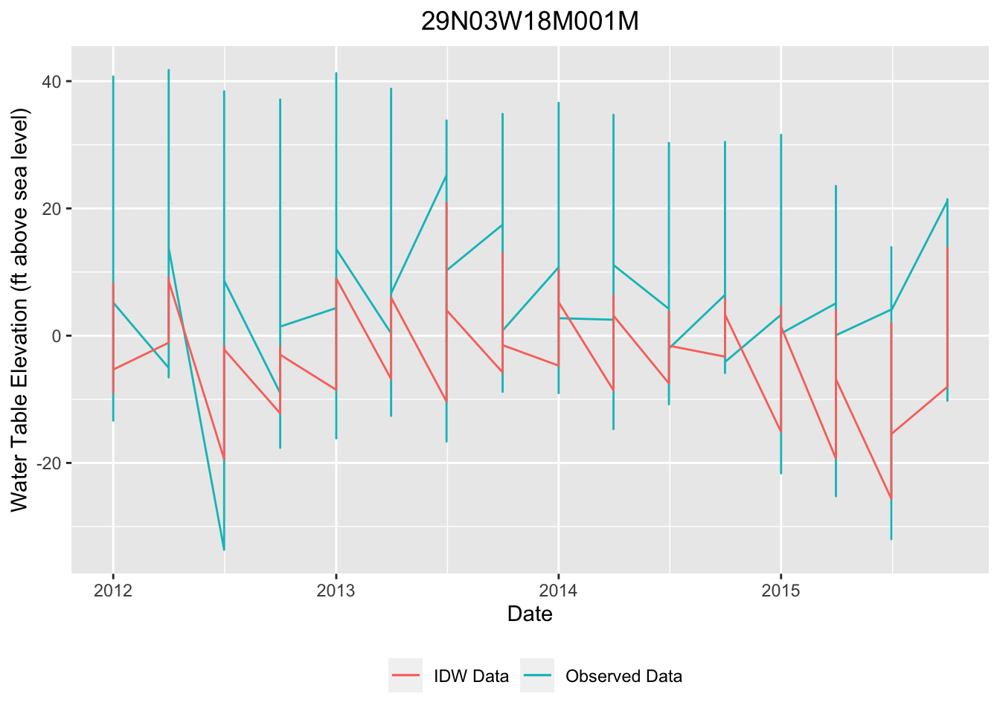
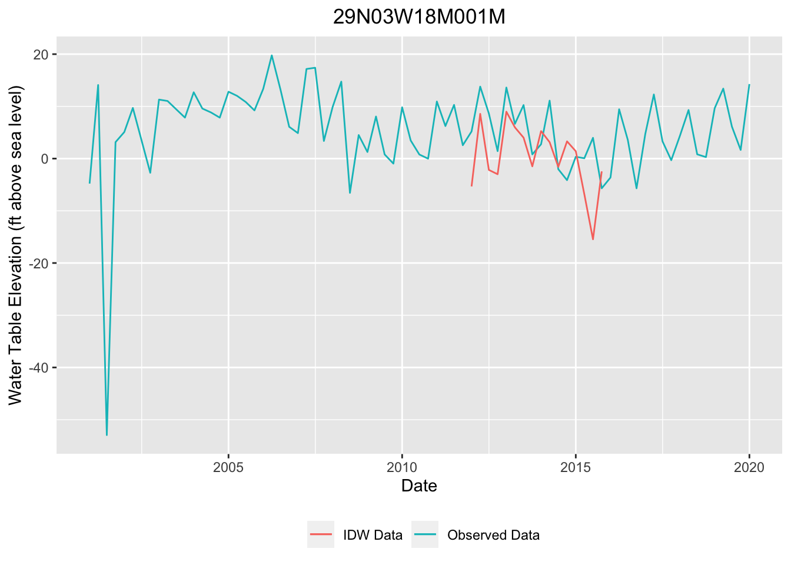

Chapter 5 Analysis
In this chapter, we will clean the data further and perform interpolation on each well from the chosen set. First, the Extreme Learning Machine method, described in Chapter 3, will be set up to impute missing values. A spatial interpolation method, Inverse Distance Weighting (IDW) will then be performed for comparison purposes. Finally, the accuracy of the IDW method will be analyzed and compared.
In order to determine accuracy, three years (2012-2015) of data will be imputed. Then, the imputed data will be compared to the observed data.
5.1 Extreme Learning Machine
As described previously, the ELM method forms a relationship between input data sources (in our case, remotely sensed earth observation data) and observed data. This relationship is then used to impute data for time periods without measurements. Evans (2020) demonstrated this method in Python with promising results. Unfortunately, due to time constraints and knowledge constraints, the conversion from Python to R was not completed in this paper. The full scope of this undertaking was not evident to the author at the outset (it should be noted that Evans (2020) shared psuedocode in their paper; the full process is much more involved). However, in future work, we hope to be able to solve this method in R. This section will merely set up the data and methods that future work can build upon.
First, we will need to load previously created datasets.
# Load existing datasets
load("Data/master.Rda")
master_wells <- read.csv(file = 'Data/master_wells.csv')
test_wells <- read.csv(file = 'Data/test_wells.csv')In order to prepare the data for analysis, the data must be summarized to uniformly spaced time steps. We will summarize this dataset to 3 month (quarterly) averages. In order to interpolate, water table elevations must be generated, rather than simple depth to groundwater measurements. This is because different depths may extend to the same water table elevation, depending on the ground elevation. This is less important for the ELM method, but becomes very important in spatial interpolation, discussed in the next section.
# Create dataset with all well data in 3 month increments
test_ts_3mon <- data.frame(c())
for (well in test_wells$mergeOn){
ts <- filter(master, mergeOn == well)
w3mon_ts <- ts %>%
mutate(date = lubridate::floor_date(date, "3 months"), mergeOn = mergeOn) %>%
group_by(date, mergeOn) %>%
summarize(Mean_depth=-1*mean(depth.to.GW..ft.))
test_ts_3mon <- as.data.frame(rbind(test_ts_3mon, w3mon_ts))
#assign(paste(well, "_3mon_ts", sep = ""), mon_ts)
}
# Format time series dataframe and add WTE column
test_ts_3mon <- merge(test_ts_3mon, test_wells, by = "mergeOn")
test_ts_3mon$WTE <- test_ts_3mon$Elev + test_ts_3mon$Mean_depth
test_ts_3mon <- subset(test_ts_3mon, select = -c(X))
write.csv(test_ts_3mon, file = "Data/test_ts_3mon.csv")Now, we will create a facet-wrapped group of time series graphs for each well using the quarterly averages that we just created.
# Now let's create time series graphs of these quarterly means
test_ts_3mon %>%
ggplot(aes(x = date, y = WTE)) +
geom_line(color = "blue") +
xlab("Date") +
ylab("Water Table Elevation (ft above sea level)") +
ggtitle("Quarterly Time Series for Each well") +
theme(plot.title = element_text(hjust = 0.5)) +
facet_wrap(~mergeOn)Next, we will load in a remotely sensed earth observation dataset, the Palmer Drought Severity Index (PDSI). The PDSI is one of the measures that we can correlate groundwater levels with. For the sake of this demonstration, we will only use the PDSI. But for more accurate results, multiple earth observation datasets would need to be used.
The PDSI data is hosted by the National Oceanic and Atmospheric Administration’s (NOAA) Physical Sciences Laboratory (Dai and Qian (n.d.)). It spans from 1850 to 2014. There is a normal dataset and a “self-calibrated” dataset; we will use the latter because it has more recent data (it spans up through 2014, whereas the normal dataset spans up through 2005). It is stored in a netcdf file, which means we will need to utilize the ncdf4 library.
We will start by opening the data file and store it in a data object. We will then print the metadata and inspect.
# Store pdsi data in dataframe and print metadata
library(ncdf4)
climate_output_sc <- nc_open("Data/pdsi.mon.mean.selfcalibrated.nc")
print(climate_output_sc)## File Data/pdsi.mon.mean.selfcalibrated.nc (NC_FORMAT_CLASSIC):
##
## 1 variables (excluding dimension variables):
## float pdsi[lon,lat,time]
## statistic: Mean
## missing_value: -99999
## dataset: Dai Palmer Drought Severity Index: Self-calibrated
## long_name: Monthly Self-calibrated Palmer Drought Severity Index using Penman-Monteith PE
## level_desc: Surface
## var_desc: Palmer Drought Severity Index
## least_significant_digit: 2
## units: Standardized Units of Relative Dry and Wet
## actual_range: -8.16020011901855
## actual_range: 8.16014289855957
## valid_range: -100
## valid_range: 100
##
## 3 dimensions:
## lon Size:144
## units: degrees_east
## long_name: Longitude
## actual_range: -178.75
## actual_range: 178.75
## standard_name: longitude
## axis: X
## lat Size:55
## units: degrees_north
## long_name: Latitude
## actual_range: -58.75
## actual_range: 76.25
## standard_name: latitude
## axis: Y
## time Size:1980 *** is unlimited ***
## units: hours since 1800-01-01 00:00:0.0
## actual_range: 438288
## actual_range: 1883904
## long_name: Time
## delta_t: 0000-01-00 00:00:00
## avg_period: 0000-01-00 00:00:00
## standard_name: time
## axis: T
##
## 9 global attributes:
## title: Global Monthly Dai Palmer Drought Severity Index
## history: created Apr 2013 from data at NCAR webpage:updated Nov 2015 from new dataset version
## References: https://www.psl.noaa.gov/data/gridded/data.pdsi.html
## original_source: NCAR/UCAR: A Dai http://www.cgd.ucar.edu/cas/catalog/climind/pdsi.html.
## comments: original creation date: Thu Oct 25 15:25:40 MDT 2012 at NCAR. Updated at PSD Oct 2016 with corrected NCAR data
## Conventions: COARDS
## details: see ncar for more detials and updates
## description:
## Monthly Self-calibrated Palmer Drought Severity Index (scPDSI)
## calculated using observed surface air temperature (HadCRUT4 from
## http://www.cru.uea.ac.uk/cru/data/temperature/ ) and
## precipitation (from Dai et al. (1997, J.Clim: for 1870-1947) +
## Chen et al. (2002, J. Hydromet.: for 1948-1978 + GPCP v2.2 for
## 1979-present. The Dai and Chen P data were adjusted to have the
## same mean as the GPCP data over the 1979-1996 period).
## Calibration (or reference) period is 1950-1979.
## Wind speed and air pressure data were from 20CR v2. Other data
## were based on CRU TS3.22. Documention:
## Dai, A., 2011a: Characteristics and trends in various forms of the
## Palmer Drought Severity Index (PDSI) during 1900-2008. J. Geophys.
## Res., 116, D12115, doi:10.1029/2010JD015541.
## Dai, A., K. E. Trenberth, and T. Qian, 2004: A global data set of
## Palmer Drought Severity Index for 1870-2002: Relationship with soil
## moisture and effects of surface warming. J. Hydrometeorology, 5,
## 1117-1130. Data source: Dr. A. Dai/NCAR (adai@ucar.edu). See
## http://www.cgd.ucar.edu/cas/catalog/climind/pdsi.html for updates.
## WARNING: PDSI and scPDSI over the higher latitudes (e.g., >50deg.)
## may not be a good proxy of soil moisutre content. Also, PDSI and
## scPDSI are highly autocorrelated indices not good at resolving
## sub-seasonal variations. Please use with caution!
## This is a normalized version so that every grid box has the same
## s.d. as that in the central U.S. during the calibr. period (1950-79)
## dataset_title: Palmer Drought Severity IndexThe important takeaway from this metadata is that there are three different variables - latitude, longitude, and time - over which the PDSI data spans across. This is why it was stored in a netCDF file format.
We will store each of these variables in separate arrays. We will also store the PDSI values in an array and extract the values that we need based on the lat/long/time variables. We will start by obtaining an the latitude and longitude for our test well, which will be well 29N03W18M001M. This will be used to extract only the data we need from the pdsi dataset. Then the arrays can be created.
# Create lat/long objects that will be used to obtain the pdsi data for the study area
well_lat <- mean(filter(test_wells, mergeOn == well)$lat)
well_long <- mean(filter(test_wells, mergeOn == well)$lon)
# Obtain the lat,long, and time arrays from the data
lat <- ncvar_get(climate_output_sc,"lat")
lon <- ncvar_get(climate_output_sc,"lon")
time <- ncvar_get(climate_output_sc,"time")
# Obtain pdsi data and store in array
pdsi_array <- ncvar_get(climate_output_sc,"pdsi")
# Find the lat/long coordinates that are closest to the average well_long and well_lat
ncd_lon <- which(abs(lon-well_long)==min(abs(lon-well_long)))
ncd_lat <- which(abs(lat-well_lat)==min(abs(lat-well_lat)))
#Print them
cat("Lat:", lat[ncd_lat], ", Long:", lon[ncd_lon])## Lat: 38.75 , Long: -121.25Now that the data is set up, we will explore - briefly - the process for ELM. As this analysis has not been performed successfully in R, we will not spend an inordinate amount of time on it, except to introduce the concept. The detailed explanation of this method can be found in the study performed by Evans (2020) and all clarification should be sought in that paper. This report merely sets up the process.
First, we generate a set of random input weights. These will have a normal distribution and will create a 1 x 500 matrix. Next, the bias vector is generated with 500 randomized values (creating a 500 x 1 matrix). Then, we will extract a time series for the study area, which is the lat/long coordinate in the PDSI array that is closest to the well. The well we will be using is Well #29N03W18M001M.
# generate random input weights, W1
W1 <- matrix(rnorm(1*500), 1, 500)
# generate bias vector, b
b <- rnorm(500)
# Create a time series of the PDSI data for the selected lat/long
ncdf_ts <- pdsi_array[ncd_lon,ncd_lat,]
ncdf_ts <- mutate(as.data.frame(ncdf_ts), date = time, PDSI = ncdf_ts, .keep = "none")
ncdf_ts$date <- as.Date(ncdf_ts$date/24, origin = "1800-01-01")
tail(ncdf_ts)## date PDSI
## 1975 2014-07-01 -1.96039844
## 1976 2014-08-01 -0.36029744
## 1977 2014-09-01 -0.06562341
## 1978 2014-10-01 -0.65678751
## 1979 2014-11-01 -0.76688999
## 1980 2014-12-01 0.30445653As we can see, the PDSI values show up and correlate to monthly time steps. To simplify the analysis and eliminate noise, we will re-sample the data to three-month intervals. We will also clip the data to the time period that we have observed groundwater level data for.
# Create a ts dataframe of the PDSI data with 3 month averages and a time frame lining up with the well data
X <- c()
X <- ncdf_ts %>%
mutate(date = lubridate::floor_date(date, "3 months")) %>%
group_by(date) %>%
summarize(PDSI=mean(PDSI)) %>%
subset(date %in% w3mon_ts$date)Now we can create the A Matrix. This matrix is used to determine the weights for the observed data correlation.
# generate the A matrix
a <- (X$PDSI %*% W1)
ab <- a + rep(b, each = nrow(a))
# basis function (theta) sets negative values to zero
A <- pmax(ab, 0)The last thing we will do in this analysis is to generate the identity matrix. We will also apply a weight, lambda, to the identity matrix.
This concludes the set up for the ELM method. Next, we will discuss a spatial interpolation method, IDW, which will provide a comparison tool for the ELM. In future works, we will complete this analysis of ELM.
5.2 Inverse Distance Weighting
Previously, we discussed spatial interpolation methods, such as Kriging. Inverse Distance Weighting (IDW) is essentially a simplified version of Kriging. IDW is a spatial interpolation method that uses nearby observations to interpolate an unknown value at a location. IDW places more weight on observed values that are closer to the point in question. It is a fairly simple method of interpolation, and can be implemented in R fairly easily, as will be shown. We will first interpolate the values over a predefined set of years and then compare the IDW solutions with the observed data.
First, we will add the datasets created previously. As stated above, we will interpolate over 2012-2015.
# Load the datasets created previously
load("Data/master.Rda")
master_wells <- read.csv(file = 'Data/master_wells.csv')
test_wells <- read.csv(file = 'Data/test_wells.csv')
test_ts_3mon <- read.csv(file = 'Data/test_ts_3mon.csv')
# Set date column as date
test_ts_3mon[,"date"] <- as.Date(test_ts_3mon[,"date"])Next, we will loop through each well and each year and perform the IDW interpolation. We will use the idw function to do this. But first, we need to create a list of the dates on which we are going to interpolate.
Using these dates, we will loop through each well at each date and perform the idw calculation, using the values from the adjacent wells.
library(sp)
library(gstat)
library(dplyr)
# Loop through and perform the IDW calculation for each well at each time step
interp_values <- as.data.frame(c())
for (well in test_wells$mergeOn){
for (dt in dates){
sample <- test_ts_3mon %>%
filter(mergeOn != well) %>%
filter(date == dt) %>%
select(-lat, -lon, -Elev) %>%
merge(test_wells, by = "mergeOn") %>%
select(mergeOn, date, lat, lon, Elev, Mean_depth, WTE)
coordinates(sample) = ~lon+lat
proj4string(sample) <- CRS("+proj=longlat +datum=WGS84")
poi <- data.frame(
lon_poi = filter(test_wells, mergeOn == well)$lon,
lat_poi = filter(test_wells, mergeOn == well)$lat)
coordinates(poi) <- ~ lon_poi + lat_poi
proj4string(poi) <- CRS("+proj=longlat +datum=WGS84")
new <- idw(formula=WTE ~ 1, locations = sample, newdata = poi, idp = 2.0)
interp_values <- rbind(interp_values, c(well, dt, new@data$var1.pred))
}
}## [inverse distance weighted interpolation]
## [inverse distance weighted interpolation]
## [inverse distance weighted interpolation]
## [inverse distance weighted interpolation]
## [inverse distance weighted interpolation]
## [inverse distance weighted interpolation]
## [inverse distance weighted interpolation]
## [inverse distance weighted interpolation]
## [inverse distance weighted interpolation]
## [inverse distance weighted interpolation]
## [inverse distance weighted interpolation]
## [inverse distance weighted interpolation]
## [inverse distance weighted interpolation]
## [inverse distance weighted interpolation]
## [inverse distance weighted interpolation]
## [inverse distance weighted interpolation]
## [inverse distance weighted interpolation]
## [inverse distance weighted interpolation]
## [inverse distance weighted interpolation]
## [inverse distance weighted interpolation]
## [inverse distance weighted interpolation]
## [inverse distance weighted interpolation]
## [inverse distance weighted interpolation]
## [inverse distance weighted interpolation]
## [inverse distance weighted interpolation]
## [inverse distance weighted interpolation]
## [inverse distance weighted interpolation]
## [inverse distance weighted interpolation]
## [inverse distance weighted interpolation]
## [inverse distance weighted interpolation]
## [inverse distance weighted interpolation]
## [inverse distance weighted interpolation]
## [inverse distance weighted interpolation]
## [inverse distance weighted interpolation]
## [inverse distance weighted interpolation]
## [inverse distance weighted interpolation]
## [inverse distance weighted interpolation]
## [inverse distance weighted interpolation]
## [inverse distance weighted interpolation]
## [inverse distance weighted interpolation]
## [inverse distance weighted interpolation]
## [inverse distance weighted interpolation]
## [inverse distance weighted interpolation]
## [inverse distance weighted interpolation]
## [inverse distance weighted interpolation]
## [inverse distance weighted interpolation]
## [inverse distance weighted interpolation]
## [inverse distance weighted interpolation]
## [inverse distance weighted interpolation]
## [inverse distance weighted interpolation]
## [inverse distance weighted interpolation]
## [inverse distance weighted interpolation]
## [inverse distance weighted interpolation]
## [inverse distance weighted interpolation]
## [inverse distance weighted interpolation]
## [inverse distance weighted interpolation]
## [inverse distance weighted interpolation]
## [inverse distance weighted interpolation]
## [inverse distance weighted interpolation]
## [inverse distance weighted interpolation]
## [inverse distance weighted interpolation]
## [inverse distance weighted interpolation]
## [inverse distance weighted interpolation]
## [inverse distance weighted interpolation]
## [inverse distance weighted interpolation]
## [inverse distance weighted interpolation]
## [inverse distance weighted interpolation]
## [inverse distance weighted interpolation]
## [inverse distance weighted interpolation]
## [inverse distance weighted interpolation]
## [inverse distance weighted interpolation]
## [inverse distance weighted interpolation]
## [inverse distance weighted interpolation]
## [inverse distance weighted interpolation]
## [inverse distance weighted interpolation]
## [inverse distance weighted interpolation]
## [inverse distance weighted interpolation]
## [inverse distance weighted interpolation]
## [inverse distance weighted interpolation]
## [inverse distance weighted interpolation]Now we can clean up the dataframe a bit and create 2 new datasets that contain both interpolated vales and observed values. One will contain data from the well of interest, well 29N03W18M001M. The other will contain the observed and IDW values for all wells.
# Rename the columns and set to proper data types
colnames(interp_values) <- c("mergeOn", "date", "WTE_IDW")
interp_values$date <- as.Date(interp_values$date)
interp_values$WTE_IDW <- as.numeric(interp_values$WTE_IDW)
# Create 2 new datasets that combine observed values with IDW values
comp_data_single_IDW <- merge(interp_values,test_ts_3mon,by=c("mergeOn","date"))
comp_data_all_IDW <- test_ts_3mon %>%
filter(mergeOn == well) %>%
left_join(interp_values,by=c("date", "mergeOn"))Finally, we will plot the IDW interpolated values. First, we will look at a single well, #29N03W18M001M. We will superimpose the IDW values over the entire observed time series for the well. We will do this using the GGPlot2 package again.
# Rename the columns and set to proper data types
# Plot all observed values vs. the IDW values for Well 29N03W18M001M
library(ggplot2)
comp_data_single_IDW %>%
ggplot(aes(x = date)) +
geom_line(aes(y = WTE, color = "steelblue")) +
geom_line(aes(y = WTE_IDW, color = "orange")) +
scale_color_discrete(name = "", labels = c("IDW Data", "Observed Data")) +
xlab("Date") +
ylab("Water Table Elevation (ft above sea level)") +
ggtitle(well) +
theme(plot.title = element_text(hjust = 0.5), legend.position = "bottom")
Finally, we will create a mosaic of time series data showing each well’s IDW values superimposed over the observed values for the interpolation period.
# Plot 2012-2015 observed values vs. the IDW values
comp_data_all_IDW %>%
ggplot(aes(x = date)) +
geom_line(aes(y = WTE, color = "steelblue")) +
geom_line(aes(y = WTE_IDW, color = "orange")) +
scale_color_discrete(name = "", labels = c("IDW Data", "Observed Data")) +
xlab("Date") +
ylab("Water Table Elevation (ft above sea level)") +
ggtitle("All Well Time Series: IDW vs. Observed") +
theme(plot.title = element_text(hjust = 0.5), legend.position = "bottom") +
facet_wrap(~mergeOn) In the next section, we will explore the accuracy via error norms for these results.
5.3 Error Comparison
The IDW method appears to be fairly accurate, with trends similar to the observed data. However, the magnitude of values are sometimes significantly different. It should again be noted that elevations (which were required to calculate water table elevations) were obtained manually using Google Earth. In addition, the lat/long coordinates for each well were not provided with sufficient resolution to have high confidence in any elevation measurement. Therefore, the water table elevations are subject to error.
A table of error metrics can be calculated using the library Metrics. A root mean square error (RMSE) and an r-squared (R^2) error will be calculated for each well. The table will then be formatted for easy viewing.
# Calculate a set of error metrics for each well's data
library(Metrics)
error_metrics_summary <- data.frame()
for (well in test_wells$mergeOn) {
comp_data_well <- comp_data_all_IDW %>%
filter(mergeOn == well)
rmse_error <-rmse(comp_data_well$WTE, comp_data_well$WTE_IDW)
rsq <- cor(comp_data_well$WTE, comp_data_well$WTE_IDW)^2
error_metrics_summary <- rbind(error_metrics_summary, c(well, rmse_error, rsq))
}
colnames(error_metrics_summary) <- c("Well ID", "RMSE", "R^2")
error_metrics_summary$RMSE <- as.numeric(error_metrics_summary$RMSE)
error_metrics_summary$'R^2' <- as.numeric(error_metrics_summary$'R^2')
error_metrics_summary[,-1] <-round(error_metrics_summary[,-1],3)
error_metrics_summary## Well ID RMSE R^2
## 1 24N02W03B001M NaN NA
## 2 24N02W24D003M NaN NA
## 3 24N02W29N004M NaN NA
## 4 25N03W11B003M NaN NA
## 5 29N03W18M001M NA NAWells 25N03W11B003M and 29N03W18M001M appear to have values that are closest to their observed values. However, wells 24N02W24D003M and 25N03W11B003M appear to have the best “fit” to their observed values.
This concludes the chapter on data imputation methods. The final chapter will summarize the paper and discuss future work.
References
Dai, K. E. Trenberth, A., and T. Qian. n.d. “A Global Data Set of Palmer Drought Severity Index for 1870-2002: Relationship with Soil Moisture and Effects of Surface Warming.” https://psl.noaa.gov/data/gridded/data.pdsi.html.
Evans, Williams, S. 2020. “Exploiting Earth Observation Data to Impute Groundwater Level Measurements with an Extreme Learning Machine.” Remote Sensing 12: 2044. https://doi.org/10.3390/rs12122044.